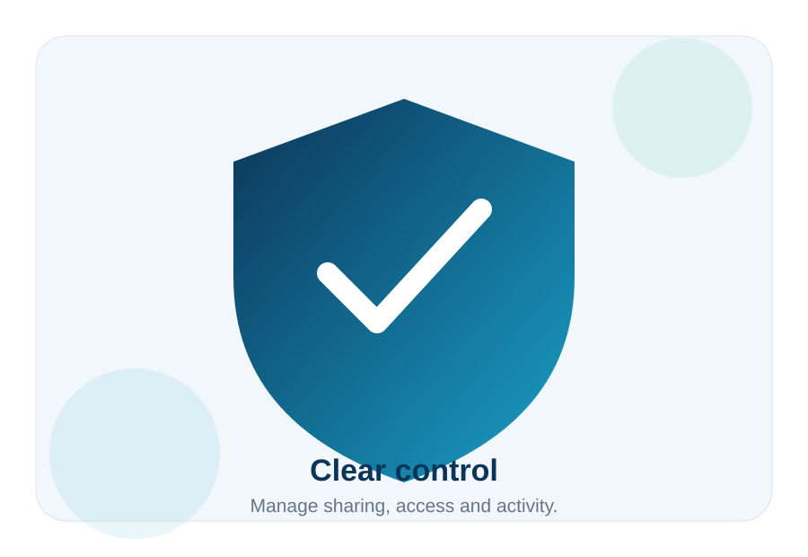
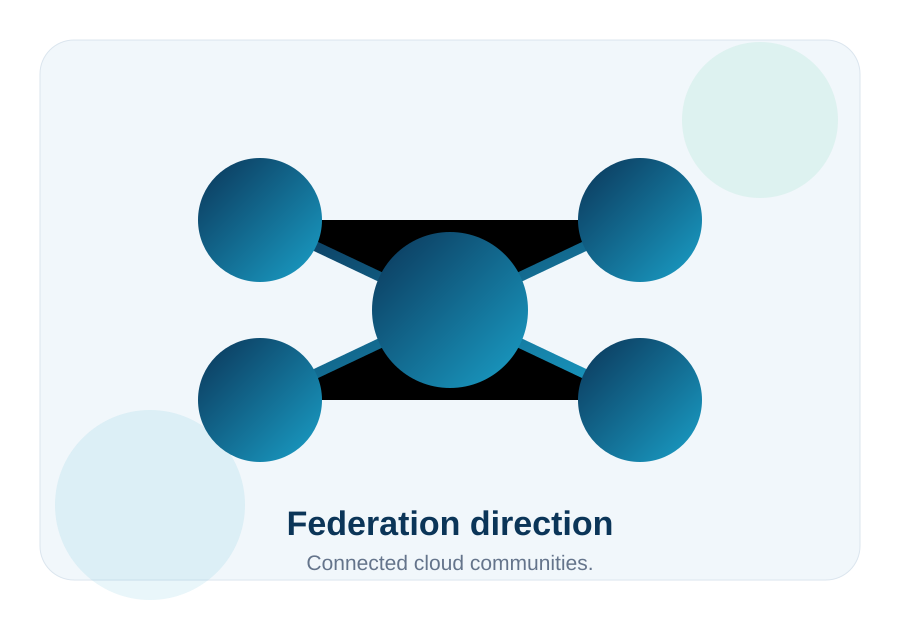

Homes
Files, photos, music and shared memories.
DNA-Nexus is designed for users and organizations that want practical cloud features, transparent sharing and a service relationship they can understand.
The service brings together storage, sharing, media, customer uploads and administration so users can work from one place instead of many disconnected tools.


The long-term direction includes server-to-server federation. When users from different DNA-Nexus services connect, their servers can discover each other through Nodus and exchange selected Circle Stack activity.
Homes, families, small businesses, schools, clubs, associations, communities and privacy-conscious organizations.
Files, photos, music and shared memories.
Customer file intake, branded uploads and controlled sharing.
Shared material, albums, posts and local collaboration.
A practical cloud service with more utility than basic storage.